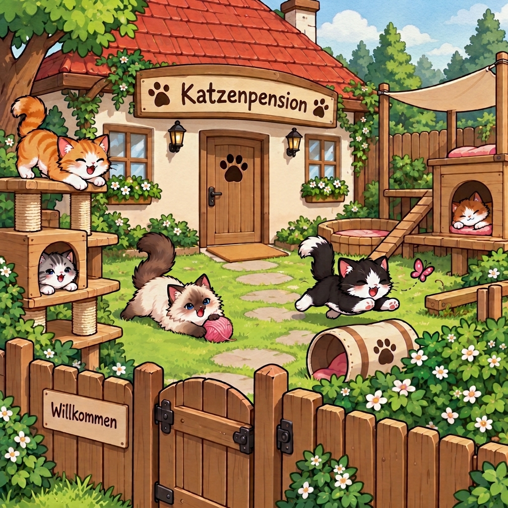
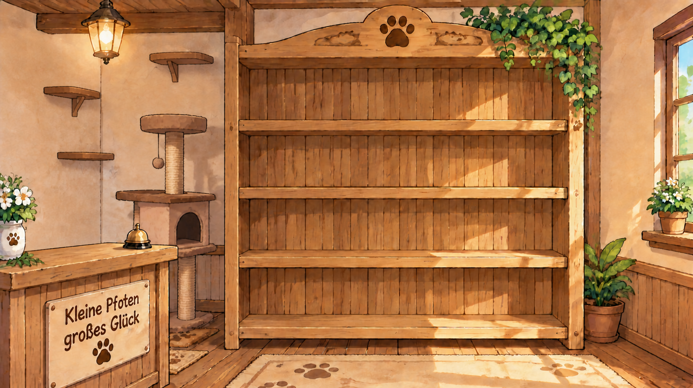
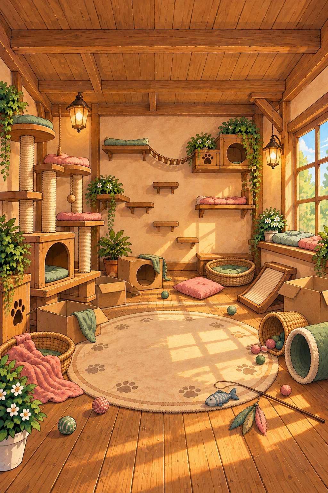
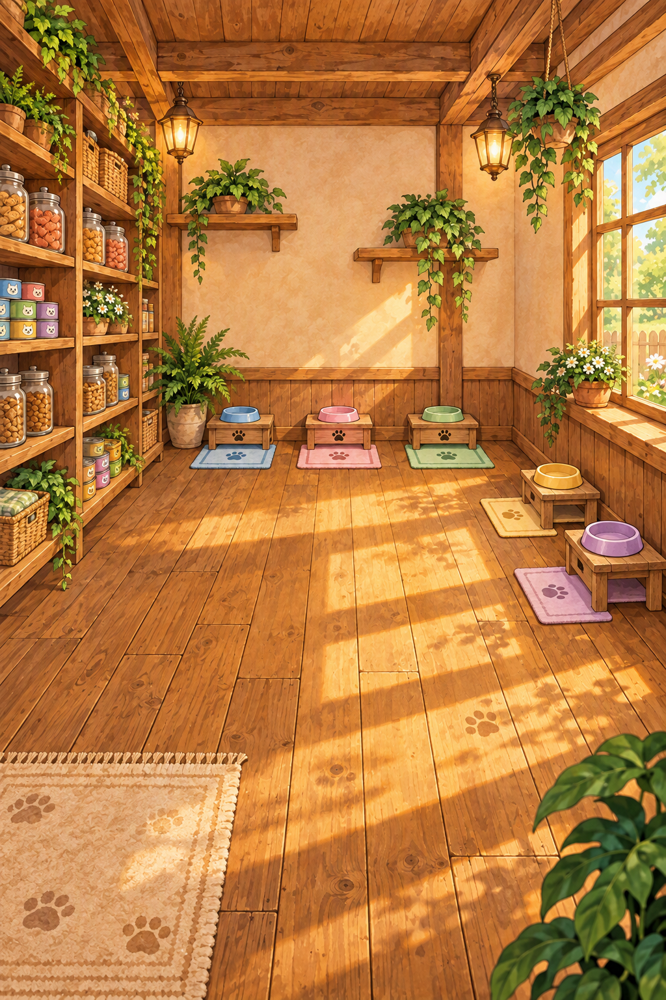
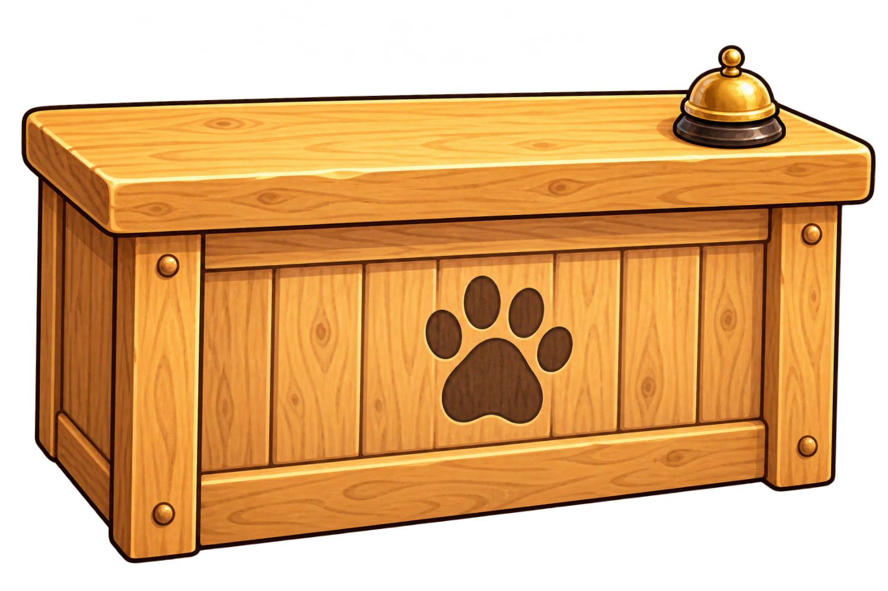

Ein kleiner Hof. Fünf große Persönlichkeiten.
Willkommen in der Katzenpension

Hier gehört dein Hofbild hin.
Speichere es als bilder/hof.png.Kleine Pfoten, großes Glück
Was spielen wir heute?
Wähle ein Spiel aus dem Regal.

Das Eingangsbild fehlt. Prüfe die Datei bilder/eingang.png. Die Spiele kannst du trotzdem auswählen.
Die Abendruhe beginnt
Pfotenpause
Finde für jeden Gast einen friedlichen Schlafplatz.
Wie wird gespielt?
- Genau eine Katze pro Reihe und Spalte.
- Genau eine Katze pro farbigem Bereich.
- Katzen dürfen sich nicht berühren, auch nicht diagonal.
Jeder Bereich gehört zu einer bestimmten Katze. Ein × ist nur deine Denkstütze. Erneutes Antippen entfernt die gleiche Markierung.
Katzen: 0 von 5
Streit wird erst beim Prüfen sichtbar.
Die Katzen warten auf ihre Schlafplätze.
Ein Tag voller kleiner Abenteuer
Gutenachtgeschichte
Finde die Paare und entdecke, was heute passiert ist.
Wie wird gespielt?
- Decke nacheinander zwei Karten auf.
- Gleiche Bilder bleiben sichtbar. Unterschiedliche drehen sich wieder um.
- Jedes gefundene Paar erzählt ein kleines Abenteuer des Tages.
Lies die Geschichte und schließe das Fenster, um weiterzuspielen. Es gibt kein Zeitlimit.
Spielzeugmäuse auf Entdeckungstour
Mäusealarm
Fange die Mäuse. Lass die Katzen in Ruhe.
Wie wird gespielt?
Eine gefangene Spielzeugmaus bringt einen Punkt. Eine angetippte Katze kostet einen Punkt. Dein Punktestand fällt nicht unter null.
Erreiche das Tagesziel, bevor die Zeit abläuft. Verschwundene Mäuse kosten keine Punkte. Mit „Pause“ kannst du das Spiel unterbrechen.
Punkte 0 / 8
Zeit 45 s
Die Bilder werden vorbereitet.

Bildpositionen prüfen
In diesem Modus läuft keine Zeit. Alle neun Plätze werden markiert. Tiere bleiben an den für sie erlaubten Plätzen sichtbar. Die Rechtecke markieren die Tippflächen, nicht den Bildzuschnitt.
Die Frühstücksausgabe ist geöffnet
Frühstück, bitte!
Wähle Napf und Futter. Serviere deiner wartenden Katze ihr Frühstück.
Wie wird gespielt?
Die Katze zeigt ihren Wunsch in der Sprechblase. Wähle links den passenden Napf und das passende Futter. Mit „Servieren“ gibst du die Bestellung ab.
Beim Zusammenstellen darfst du deine Auswahl ändern. Eine richtige Bestellung macht die Katze glücklich. Bei einer falschen Bestellung wird sie ärgerlich. Anschließend kommt die nächste Katze. Es gibt kein Zeitlimit.
Katze 1 von 5
Richtig: 0


Die Frühstücksausgabe wird vorbereitet.